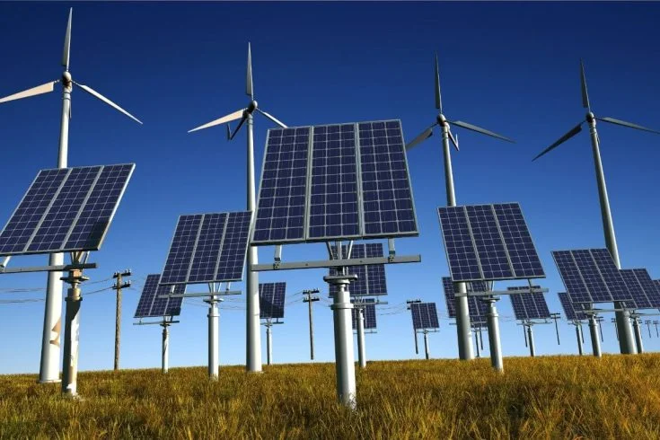
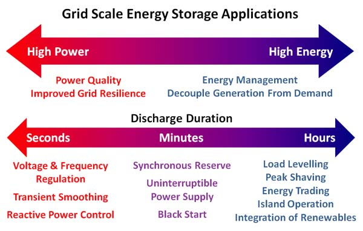
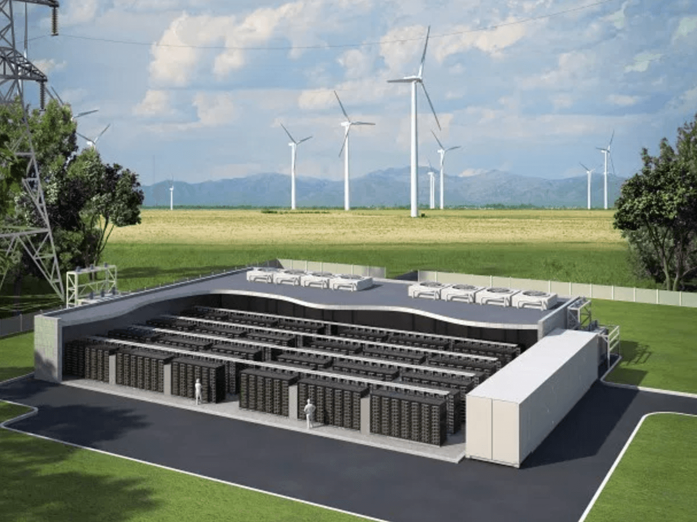
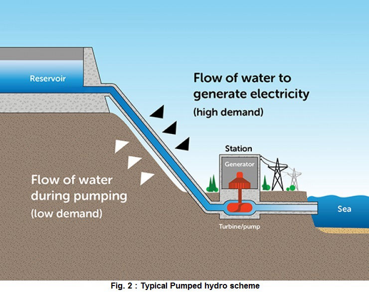
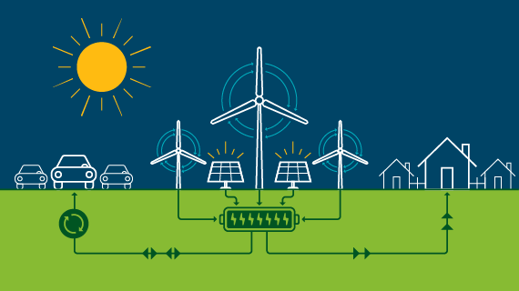
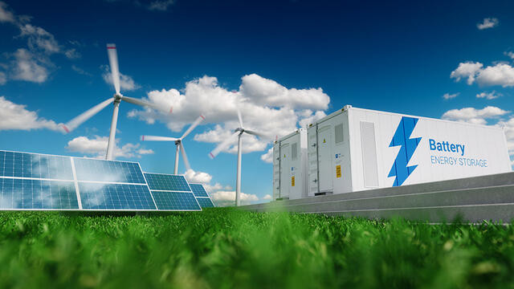

ENERGY STORAGE SYSTEMS EXPLAINED
Introduction:
As the world transitions towards a more sustainable and renewable energy future, the need for effective energy storage solutions becomes increasingly vital. Energy storage plays a crucial role in maintaining a stable and reliable power supply, managing the intermittent nature of renewable energy sources, and ultimately shaping the future of our energy landscape.
Why Energy Storage Matters:
1.Intermittency of Renewable Energy Sources:
Renewable energy sources, such as solar and wind, are dependent on weather conditions. They generate power intermittently, making it essential to store excess energy during periods of abundance for use during times of low or no generation.

2.Grid Stability and Reliability:
Energy storage enhances grid stability by smoothing out fluctuations in power generation and consumption. This stability is crucial for preventing blackouts, ensuring a reliable power supply, and accommodating the variable nature of renewable energy.

Types of Energy Storage
1.Batteries:
Batteries are the most common form of energy storage. They store electrical energy in chemical form and release it as needed. Lithium-ion batteries, for example, are widely used in electric vehicles and grid-scale applications.

2.Pumped Hydro Storage:
Pumped hydro storage involves using excess electricity to pump water uphill into a reservoir during times of low demand. When electricity is needed, the stored water is released downhill, driving turbines to generate electricity.

3.Flywheel Energy Storage:
Flywheel systems store energy by spinning a rotor at high speeds. When electricity is needed, the spinning rotor's kinetic energy is converted back into electrical energy.
Benefits of Energy Storage:
1.Grid Resilience:
Energy storage enhances the resilience of power systems by providing backup power during emergencies and allowing for a more rapid response to fluctuations in demand.

2.Reduced Greenhouse Gas Emissions:
By enabling the use of renewable energy sources and optimizing overall energy efficiency, energy storage helps reduce reliance on fossil fuels, leading to lower greenhouse gas emissions.
3.Renewable Integration:
Energy storage facilitates the integration of renewable energy sources into the grid, making it possible to balance supply and demand even when the sun isn't shining or the wind isn't blowing.

Conclusion:
In conclusion, the basics of energy storage are fundamental to shaping a sustainable and reliable energy future. From batteries to pumped hydro storage, these technologies play a pivotal role in mitigating the challenges posed by intermittent renewable energy sources. As advancements continue, the widespread adoption of energy storage solutions will undoubtedly contribute to a more resilient, efficient, and environmentally friendly global energy landscape.